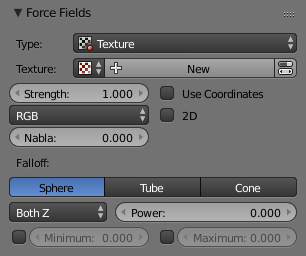

Текстура -- Texture¶
Reference
| Panel: | |
|---|---|
| Type: | Текстура -- Texture |

Силове поле «Текстура» -- Texture.
You can use a Texture force field to create an arbitrarily complicated force field, which force in the three directions is color coded. Red is coding for the X axis, green for the Y axis and blue for the Z axis (like the color of the coordinate axes in the 3D View). A value of 0.5 means no force, a value larger than 0.5 acceleration in negative axis direction (like -Z), a value smaller than 0.5 acceleration in positive axis direction (like +Z).
Опції¶

Інтерфейс користувача для силового поля Texture.
- Режим Текстури -- Texture Mode
Це задає спосіб походження вектора сила з текстури.
- RGB
- Uses the color components directly as the force vector components in the color encoded directions. You need an RGB texture for this, e.g. an image or a color ramp. So a Blend texture without a color ramp would not suffice.
- Градієнт -- Gradient
- Calculates the force vector as the 3D gradient of the intensity (grayscale) of the texture. The gradient vector always points to the direction of increasing brightness.
- Завивання -- Curl
- Розраховує вектор силування на основі завивання текстури 3D-RGB (обертання векторів RGB). Це також працює тільки з кольоровою текстурою. Може використовуватися, наприклад, для створення гарного вигляду сили турбулентності за допомогою кольорової текстури типу Clouds з шумом Perlin.
- Набла -- Nabla
- Це зсув, що використовується для розрахунку часткових похідних, необхідних для режимів текстури Gradient та Curl.
- Вжити Координати -- Use Coordinates
- При увімкненні вживає координати об'єкта емітера (а також оберт та масштаб) як простір текстур для використання частинками. Дозволяє для рухомих силових полів, що мають власні координати, прив'язуватися до локальних координат об'єкта.
- Координати Текстури Кореня -- Root Texture Coordinates
- Це корисно для волосся, оскільки воно використовує силу на основі текстури, розраховану для позиції кореня частинки для усіх частин пасма волосся.
- 2D
- The 2D button disregards the particles Z coordinate and only uses particles x&y as the texture coordinates.
Пам'ятайте, що тільки процедурна текстура є насправді у 3D.
Приклади¶
- A single colored texture (0.5, 0.0, 0.5) creates a force in the direction of the positive Y axis, e.g. hair is orientated to the Y axis.
- A blend texture with color ramp can be used to created a force "plane". E.g. on the left side (0.5, 0.5, 0.5), on the right side (1.0, 0.5, 0.5) you have a force plane perpendicular to XY (i.e. parallel to Z). If you use an object for the coordinates, you can use the object to push particles around.
- Анімована текстура типу Wood може бути використання для створення хвилеподібного руху.